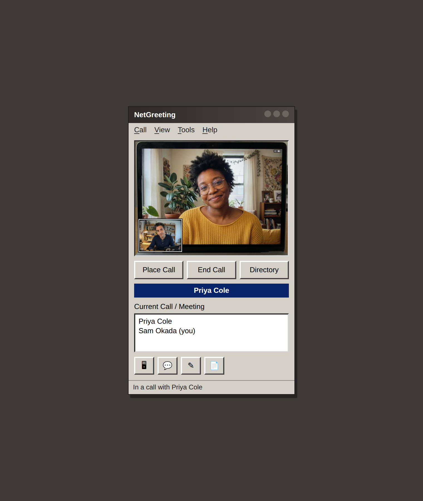
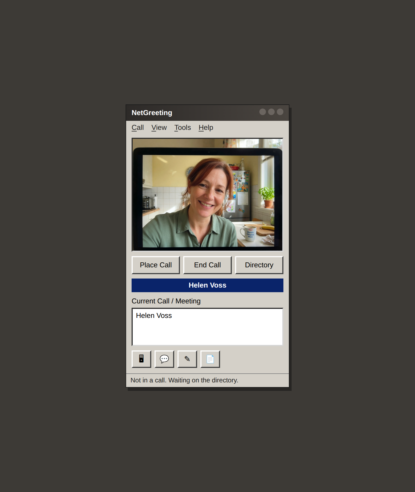
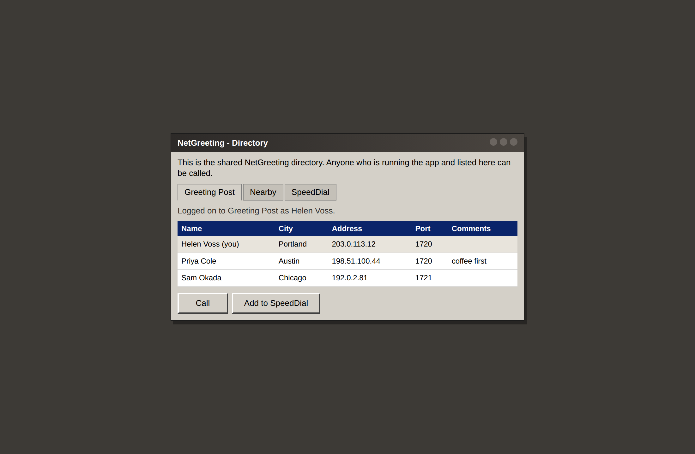
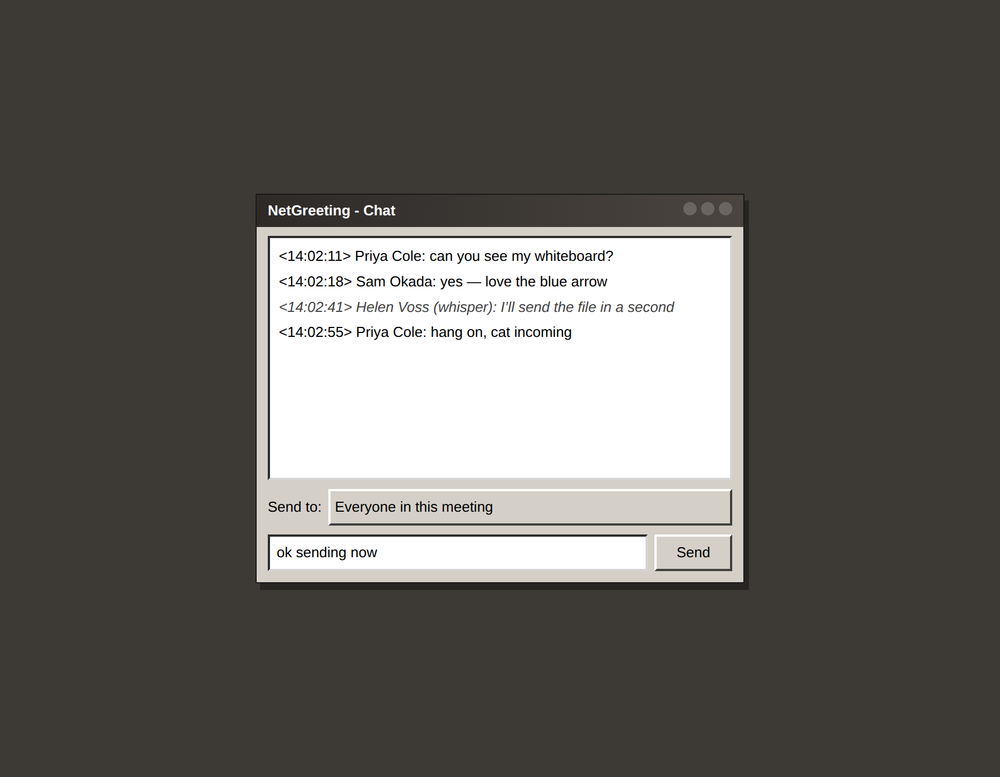
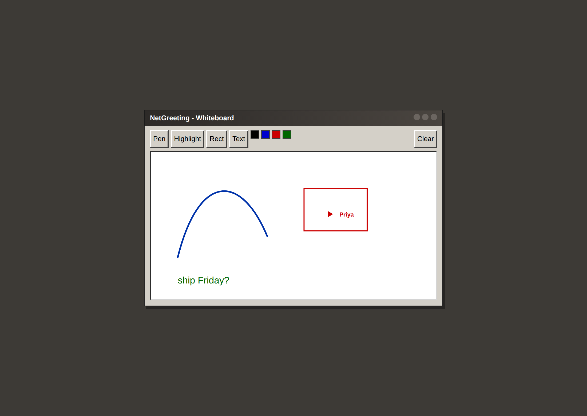

Call someone. No account. No fuss.
NetGreeting is a simple video-call app, like Microsoft NetMeeting used to be. Open it, type your name, and see who else is around.
Windows
.exe installer
Mac
.dmg — drag to Applications
Ubuntu / Debian
.deb package
Fedora
.rpm package
More files, including a Windows zip, are on the releases page.

What it looks like
The people in these pictures are stand-ins, not real users.




How to use it
- Install NetGreeting and open it.
- Go to Tools → Options and type your first name.
- Go to Call → Directory.
- If a friend is on the list, click their name, then Call.
- When someone calls you, click Accept.
During a call you can chat, sketch on the whiteboard, send a file, or share your desktop (they can look, not take over).
A couple of honest notes
- Both people need the app open at the same time.
- The directory is only a phone book. The call itself goes from your computer to theirs. Home networks sometimes block that, just like old NetMeeting.
- This is a hobby project. Calls are not encrypted. Use it with people you trust.